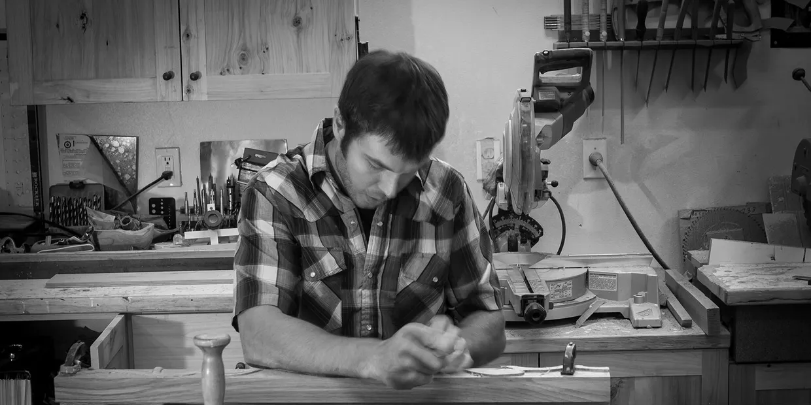
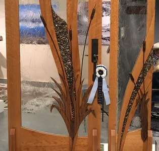
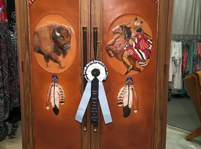
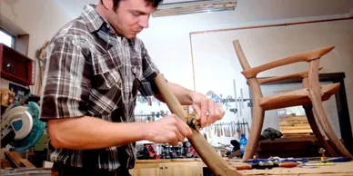
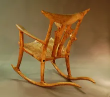
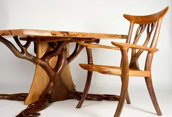
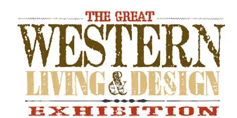

Hughes Woodworks specializes in unique fine furniture, custom cabinetry, entry and interior doors, and architectural
woodworking. With more than 18 years of experience in high end woodworking, Hughes' award winning designs and craftsmanship
have been featured in magazines, galleries, and private collections around the country. Shane believes in the artistic
process from start to finish, cutting down hardwoods, kiln-drying them, and shaping them into timeless pieces.
Shane's process starts with a simple sketch with paper and pencil, transitioning to full scale mock-ups and reiterations
in order to fine-tune proportions and design. From there, the project moves toward hand-selection of wood based on grain
appearance, color, and texture. The final piece is created with an artist's eye for detail and perfection, drawing from
the organic details of the wood .
Shane specializes in a wide range of styles ranging from modern to rustic to arts and crafts. He works with homeowners, architects,
designers, and contractors to coordinate projects from start to finish, tying in each detail with the overall design goals of each
individual project.
Our shop is located in the beautiful Six Mile valley just West of Missoula, Montana.
Fine furniture, custom cabinetry, entry and interior doors, and architectural woodworking.
With more than 18 years of experience in high end woodworking, Hughes' award winning designs and craftsmanship have been featured in magazines, galleries, and private collections around the country.
Shane specializes in a wide range of styles ranging from modern to rustic to arts and crafts.

Western Design Conference 2019
Jackson Hole, WY
"A River Runs Through It" door

Western Design Conference 2019
Jackson Hole, WY
"Buffalo Hunt" armoire

Missoulian: April 13, 2014:
Sculptor of wood: Huson Furniture maker crafts functional fine art
2014 Cody High Style - Best in Show "Designing the West" award

2013 Cody High Style- Runner up Best in Show & Exhibitors Choice

2014 Great Western Living and Design Exhibition- Best of Show "Award of Excellence" Presented by Western Art and Architecture